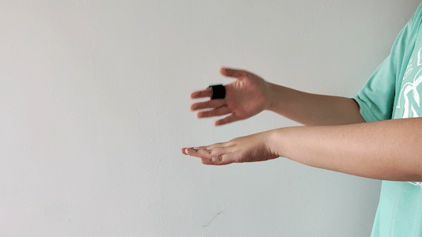

Project RAIN
Inroduction
Project RAIN is an interactive music rhythm game with hand movements. By wearing the ring-like wearable interactive device X Ring, the player must make various designated gestures according to the music rhythm and screen prompts. The game will give appropriate scores based on the accuracy of the player’s gestures. The player’s goal is to achieve a higher score and fully enjoy the music in the game.
Both the game software Project RAIN and wearable interactive device X Ring are designed and developed by Jinyi Dai.
Design Inspiration
The project was mainly inspired by Ubisoft's music dance game Just Dance. Being bothered by playing the game in limited space, I came out with the idea of designing a physical interaction game that will be more flexible. For example, it allows players to play the game at a computer desk.
While listening to music, people would unconsciously clap their hands to the beat or wave hands to the rhythm. In this situation, hand movements can enhance people's perception of music, allowing them to immerse themselves in the music and thoroughly enjoy it. In traditional music games, players are usually asked to tap the screen or press a key on the keyboard with the rhythm. However, these kinds of interactions are insufficient for immersive music. With the gesture ring, I hope to give players a better immersive andexciting music experience by combining hand gestures with musical rhythm.
About X RING
X Ring is a wireless wearable device worn on both hands that can recognize seven different gestures. It was chosen to be presented as a ring because of its lightness, convenience, and impressive appearance. Players only need to plug a mini-USB receiver into the computer to implement the connection, like using a wireless mouse.
A mini development board compatible with Arduino IDE is adopted in X Ring. It has a six-degree-of-freedom inertial measurement unit to collect gesture motion signals and a BLE (Bluetooth Low Energy) module to exchange data with the connected computer. When it recognizes the movement of player's hands, it reads a fixed-length digital signal and classifies this motion through a gesture classification model trained by CNN neural network.The trained model is converted into an Arduino header file library for direct use using TensorFlow Lite. After making a recognizable gesture, the gesture ring will send back the most likely label of the gesture to the receiving port of the connected computer through the BLE module, which can be checked by the C# code in Unity. It will be much faster than directly sending data back and handling them on the computer.
The ring is modeled by OpenSCAD, and 3D printed using black hard resin. The part near the finger is covered with soft rubber to make it more comfortable.

About Porject RAIN
Project RAIN is developed by Unity, and Some of the art resources are from the Unity Asset Store. Its name is derived from the homonym of “ring”.
By connecting X Ring with the computer, the player can control this game simply using hand gestures. For example, when the player uses the right hand to turn upward or downward, the option cursor in the game menu interface will move up and down accordingly. When the player decides to select one option, the choice can be confirmed with a simple two-handed slap.
In the game, many different music pieces can be chosen. After picking a piece of certain music, the player is required to make different gestures according to the rhythm to hit the cubes flying from a distance. The cubes in the game are of different colors and shapes to represent different gestures. When a cube is close to the screen, a white transparent circle will appear to prompt the user. When the circle turns into solid-colored, the player should make gestures in line with the color and shape of the cube. The game will give scores to players’ performance based on the accuracy of their actions and add it to the total score. The player’s goal is to achieve a higher score and fully enjoy the music.
The seven different gestures applied to the game are :
- turning the hand up
- slapping on the shoulder

- slapping on the back of both hands 
- turning the hand down
- pushing the hand forward
- drawing a circle clockwise in the air

- slapping with both hands
Story Behind
It was the first time I tried designing both hardware and software for a game, and my code programming ability had significantly improved. For the device X Ring, I implemented a trained model for gesture classification using data collecting, and applied it to the gesture ring so that it can automatically identify the start and end points of actions and directly return the gesture label. For the game Project RAIN, I independently completed all of its code work, including the part that interacts with hardware devices. I also carefully dealt with Bluetooth and gesture recognition delays. I ultimately worked out a satisfactory product that seemed almost impossible in the beginning.
This game had been on display for a week at Zhejiang University’s graduation exhibitionand caught many visitors’ attention. My questionnaire showed that most of them commented on this game as “very interesting” and looked forward to its further updates. The positive feedback from players is a huge encouragement to me.